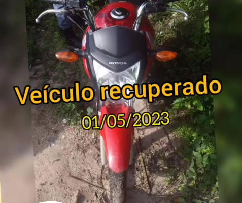
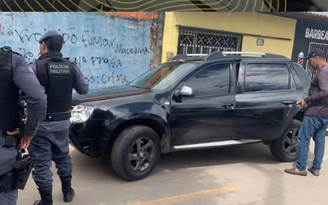
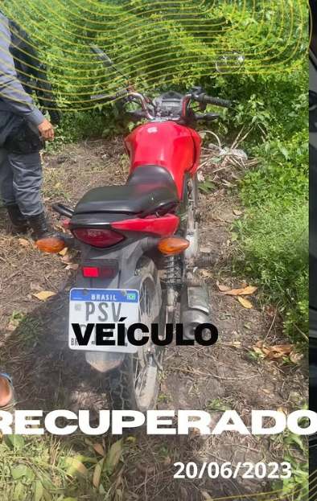
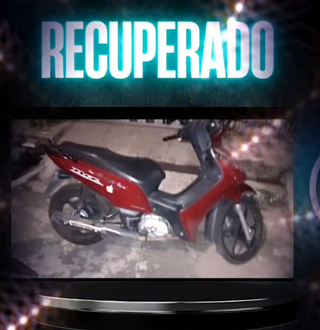
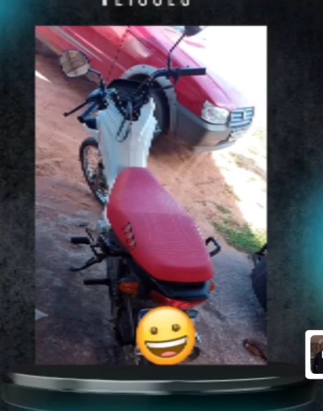

Rastreamento em tempo real
Veja a localização do veículo com atualização rápida e acompanhamento constante.
Monitoramento em tempo real, telemetria e suporte especializado para mais segurança no seu dia a dia.
Soluções pensadas para quem precisa saber onde o veículo está, agir rápido e ter suporte quando realmente importa.
Veja a localização do veículo com atualização rápida e acompanhamento constante.
Tecnologia confiável para mais cobertura, precisão e tranquilidade na operação.
Recurso estratégico para agir com rapidez em situações que exigem resposta imediata.
Atendimento rápido para orientar, instalar e acompanhar sua necessidade com segurança.
Acompanhe tudo direto do smartphone com uma experiência simples e prática.
Planos sob medida para proteção pessoal e empresarial com instalação profissional.
A CDCentral Rastreamento une monitoramento inteligente, instalação especializada e suporte ágil para entregar proteção real para o seu dia a dia.
Seu veículo acompanhado com mais visibilidade e resposta rápida.
Localização, histórico e informações essenciais na palma da mão.
Processo simples para começar a usar o serviço com rapidez e confiança.
Proteção inteligente para quem precisa dirigir, trabalhar e operar com mais tranquilidade.
Solicitar atendimentoDo primeiro contato até o acompanhamento pelo app, tudo foi pensado para facilitar sua decisão.
Fale com a equipe pelo WhatsApp e explique o que você precisa proteger.
Receba uma orientação clara para selecionar a solução ideal para sua rotina.
A configuração é feita com suporte especializado para você começar com segurança.
Depois da ativação, acompanhe localização, histórico e recursos direto no aplicativo.
Casos visuais de recuperação e acompanhamento veicular para mostrar, na prática, o valor do monitoramento.

Registro de recuperação com apoio do rastreamento e resposta rápida da operação.
Moto Honda Segurança com monitoramento em tempo real
Monitoramento que facilita localização, acompanhamento e tomada de decisão em campo.
Veículo utilitário Mais controle para proteção pessoal e empresarial
Casos como este reforçam a importância de ter rastreamento ativo e acompanhamento contínuo.
Motocicleta monitorada Resposta mais rápida em situações críticas
O serviço ajuda a manter visibilidade do veículo e reforça a sensação de segurança do cliente.
Recuperação noturna Mais tranquilidade para o dia a dia
Uma operação bem acompanhada aumenta a agilidade e fortalece a confiança no serviço.
Moto recuperada Controle pelo celular e suporte especializadoConverse agora com a CDCentral e receba atendimento pelo WhatsApp para escolher a solução ideal.